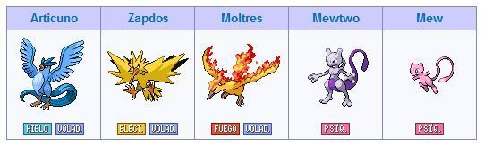
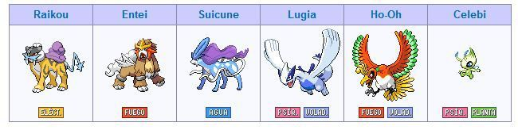
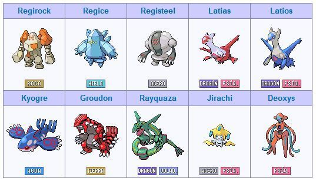
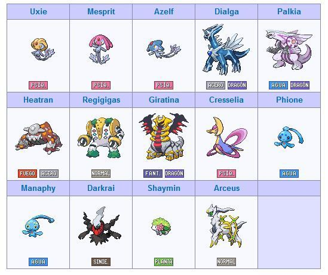
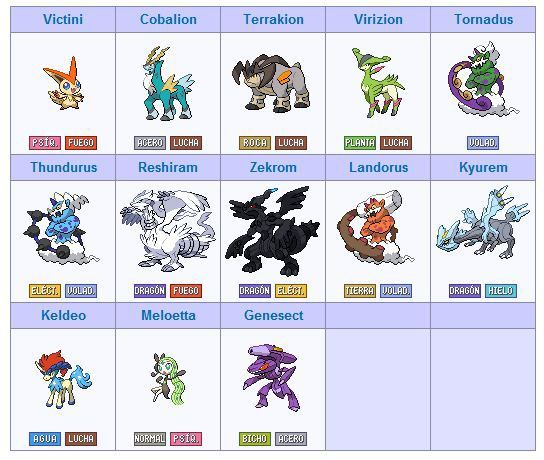
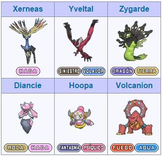
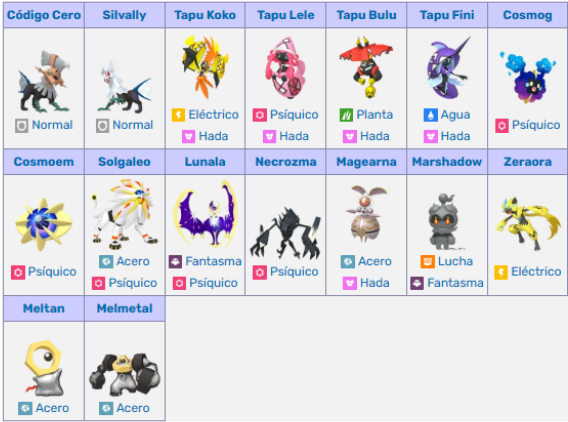
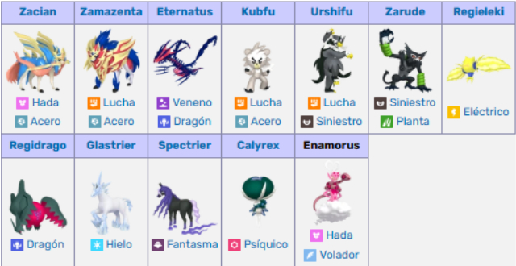
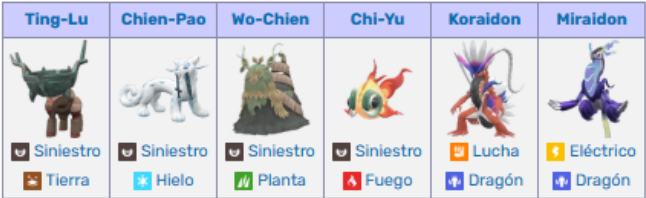

Pokemons Legendarios
Un Pokémon legendario es una criatura que destaca por su poder único y excepcional, en comparación con el resto de los Pokémon.
Los Pokémon legendarios se caracterizan, sobre todo, por su enorme poder; ya que la mayoría de ellos
tienen unas estadísticas base iguales o superiores a 570. Existen muy pocos miembros de cada especie
legendaria. En los videojuegos de Pokémon sólo pueden ser capturados legalmente en una ocasión por
partida, y no existen más miembros de su especie. Además, suelen ser muy difíciles de capturar debido
a su bajo ratio de captura.
Muchos Pokémon legendarios pertenecen a la mitología y leyendas Pokémon, siendo parte de la tradición
oral de las personas del mundo Pokémon, convirtiéndolos en criaturas muy importantes que muchas veces
influyen en el folclore y tradiciones de los pueblos, villas y ciudades.
Existen un total de 66 Pokémon legendarios, y 22 Pokémon singulares.
Algunos de los legendarios tambien se pueden clasificar en grupos mas pequeños
Primera generación
En la primera generación fueron introducidos 5 Pokémon legendarios, siendo Mew un Pokémon singular.
Segunda Generacion
6 Pokémon legendarios fueron introducidos en la segunda generación, de los cuales Celebi es singular.
Tercera Generacion
En la tercera generación fueron introducidos 10 Pokémon legendarios. De ellos Deoxys y Jirachi se incluyen en los Pokémon singulares.
Cuarta Generacion
En la cuarta generación fueron introducidos 14 Pokémon legendarios. De ellos Manaphy, Phione, Darkrai, Shaymin y Arceus son considerados singulares.
Quinta Generacion
Un total de 13 Pokémon legendarios fueron introducidos en la quinta generación, incluyendo 4 Pokémon singulares: Victini, Keldeo, Meloetta y Genesect.
Sexta Generacion
La sexta generación cuenta con un total de 6 Pokémon legendarios, siendo singulares tres de ellos: Diancie, Hoopa y Volcanion.
Septima Generacion
La séptima generación cuenta con un total de 16 Pokémon legendarios, de los cuales Magearna, Marshadow, Zeraora, Meltan y Melmetal son Pokémon singulares.
Octava Generacion
La octava generación cuenta con 12 legendarios, de los cuales Zarude es singular.
Novena Generacion
La novena generación cuenta con 6 legendarios.
